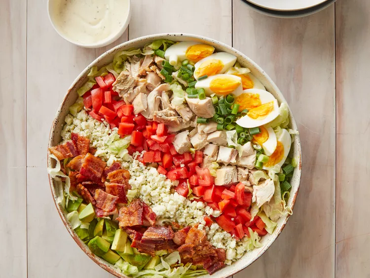

The Cobb salad is an American garden salad typically made with chopped salad greens (authentically iceberg lettuce, watercress, endives, and romaine lettuce), tomato, bacon, turkey breast, hard-boiled eggs, avocado, chives, blue cheese (often Roquefort; some versions use other cheeses such as cheddar or Monterey Jack, or no cheese at all) and red wine vinaigrette. The ingredients are laid out on a plate in neat rows. It is served as a main course.
- Cobb Salad Wikipedia Article